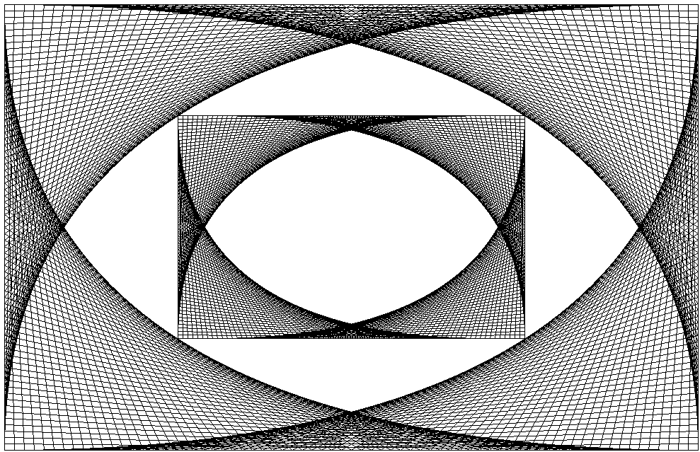
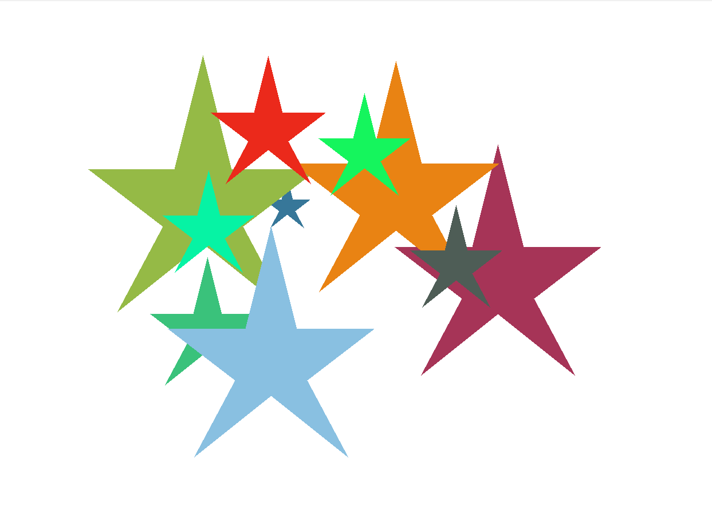
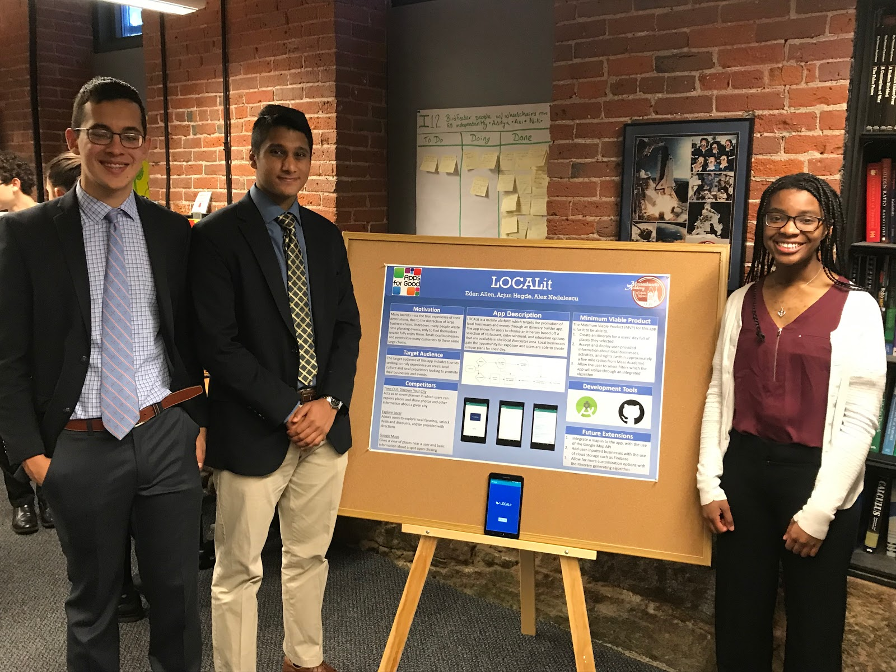
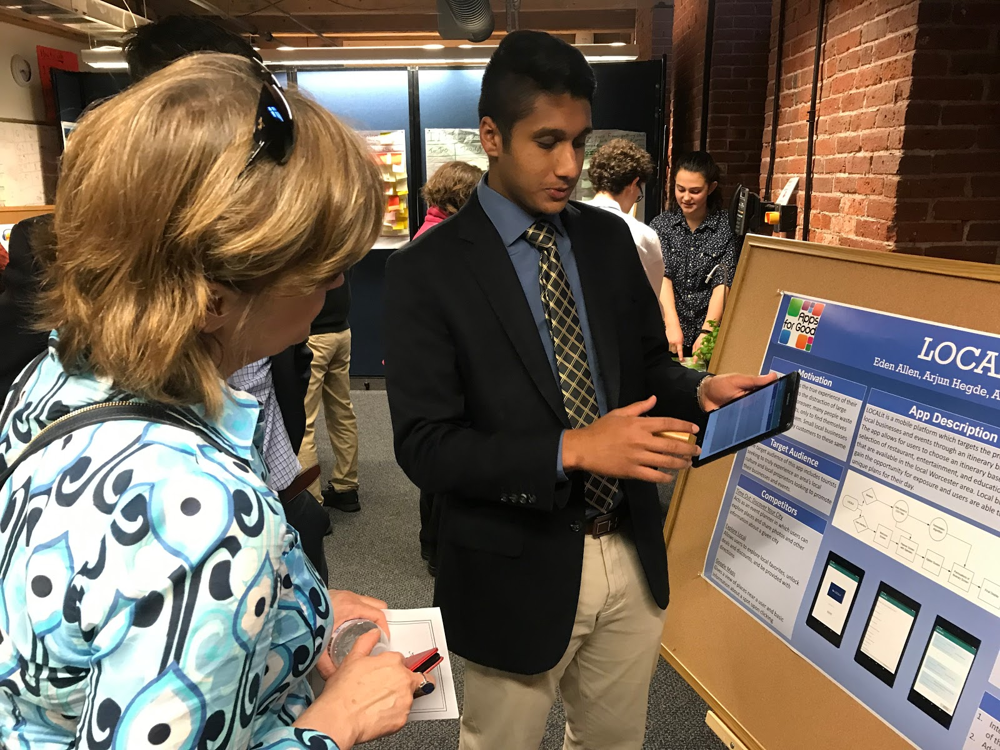

This class is taught by Mrs. Taricco. It is taught as a learn and practice class, as Mrs. Taricco believes that the best way to learn programming is to just do it and learn from your mistakes. To begin this year, we learned HTML and CSS, which is how I managed to code this website. Shortly after we finished our websites and published them to the web, we went on to begin learning Java. We started off with the basics, as we all come from different levels of CS. After learning a concept of Java, we are given a bunch of exercises or labs to do. We have focused on Object-Oriented Programming in Java. Soon we will transition into the Apps for Good program. For the second semester of the year, we are grouped in to teams and then we will develop apps. Another interesting thing we do in this class is participate in ACSL, a CS competition.
One program that I coded was called Line Art. This program utilized a Java Applet which allows for a visual output to be displayed. I utilized graphical methods as well as standard Java features like loops, specifically for-loops. The goal of this program was to use these methods to output a specific design, made from straight lines only. I remember this being an oddly fun assignment as it had more than just coding involved. A little bit of math was needed, and some visual adjustments needed to be made. To see my code for this program, please click the heading above and to see the output look down the page.
Another program that I coded was called Random Stars. This was also a Java Applet based program. Here we needed to output multiple stars of random size and color. A group of classmates and I found a much easier way to code this program, with a slightly different output than others, but still technically correct. This was a great experience to demonstrate how there are many ways to code for the same output. To see my code for this program, please click the heading above and to see the output look down the page.
During C and D term, Mass Academy juniors are grouped in to teams of three or four to work on a mobile application as part of the Apps for Good program. Apps for Good is a worldwide app development program which encourages people of all ages to get involved with technology and software. At Mass Academy, teams are tasked with creating apps that can solve problems (that’s where the “for Good” comes into place.)
My group which consisted of myself, Eden Allen, and Dan Alex Nedelescu decided to create an itinerary planner which is focused on brining local venues and tourists together, after noticing a large disparity between the two parties. Our Minimum Viable Product or MVP was to create an app that 1.) creates an itinerary for a users’ day full of places they selected, 2.) accepts and displays user-provided information about local businesses, activities, and sights (within approximately a five-mile radius from Mass Academy), and 3.) allows the user to select filters which the app will utilize through an integrated algorithm. Our next step was to do some market research to identify key features our competitors would have. This process helped solidify our goals and make our path clearer. We created a sample database, which included local Worcester venues and then created a user interface which allowed users to pick their preferences. Than the app runs an algorithm which generates multiple itineraries which users can choose from. We tested our app through a series of tests made in our test plan. If you would like to see my poster, click the heading above.
 